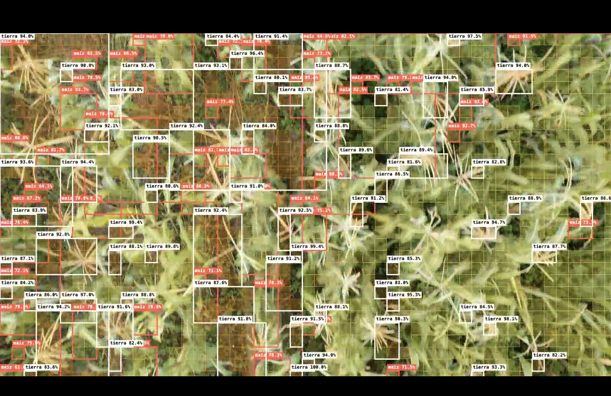
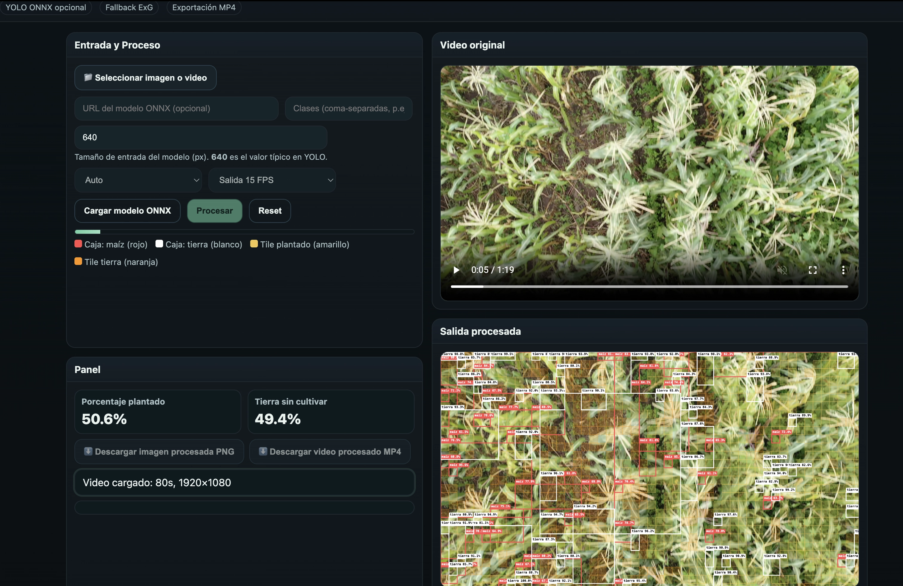
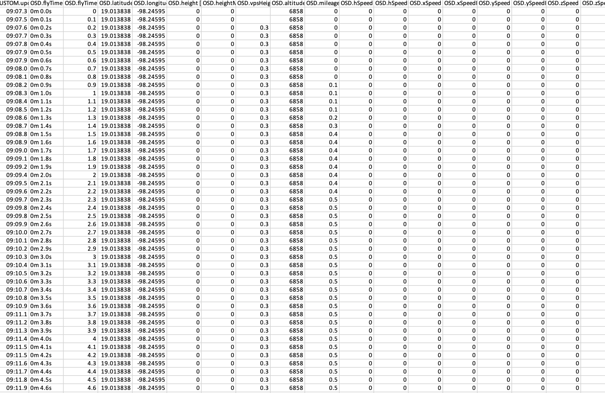

Descripción del Proyecto
Este proyecto explora el uso de drones y visión artificial para el monitoreo y análisis de cultivos agrícolas. Los estudiantes realizan vuelos sobre parcelas de cultivo para obtener imágenes y video desde diferentes alturas y perspectivas, generando un registro visual que posteriormente es procesado y analizado mediante herramientas de inteligencia artificial.
A partir del material recopilado se estudian diferentes variables relacionadas con el desarrollo del cultivo, como el estado y salud de las plantas, distribución espacial, densidad de vegetación y estimación del volumen de producción. También se busca identificar posibles riesgos o anomalías que puedan afectar el desarrollo de las plantas, como zonas con menor crecimiento, pérdida de vegetación o diferencias visibles entre áreas del cultivo.
Las imágenes obtenidas son organizadas, clasificadas, etiquetadas y validadas para construir conjuntos de datos que permitan entrenar y evaluar modelos de visión artificial. Estos modelos pueden aprender a reconocer diferentes condiciones y patrones presentes en el cultivo, facilitando posteriormente su detección automatizada.
El proyecto integra drones, fotografía aérea, procesamiento de imágenes, inteligencia artificial y análisis de datos, acercando a los estudiantes al desarrollo de herramientas para la agricultura de precisión y la toma de decisiones basada en información obtenida directamente del terreno.
Galería de Imágenes



Tecnologías Utilizadas
Participantes
- Facultad de Tecnologías de Información y Ciencia de Datos
- Coordinador: Mtro. Alejandro Jarero Mora
- Desarrolladores: Rubén Carmona Reyes
- 2025